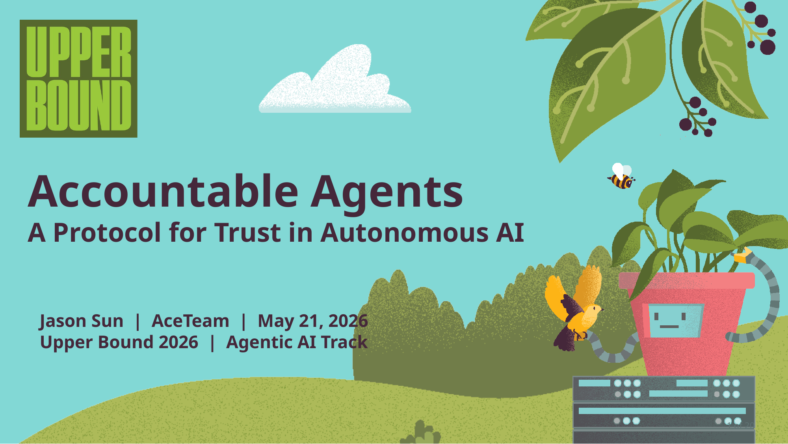
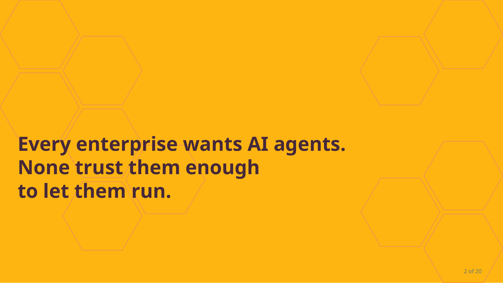
Every enterprise wants AI agents. None of them trust them enough to let them run. AI agents are doing a lot of the real work, but the problem is what we trust the AI to do or not.
Human business runs on trust. We don't work with people we don't trust. We have receipts, audits, provenance. The AI infrastructure stack is missing all of it.
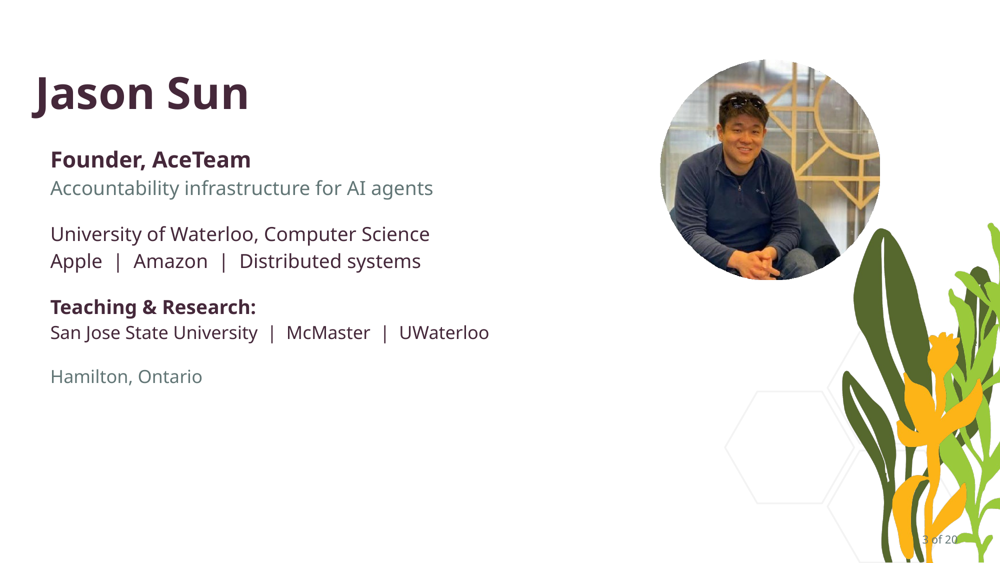
University of Waterloo, computer science. After graduating, Apple in Cupertino, then Amazon Lab 126 in Sunnyvale working on infrastructure for robots. Now building accountability infrastructure for AI agents.
Most organizations aren't running agent workflows in production yet. By next year it should be closer to 80%, if we're building this trust layer right.
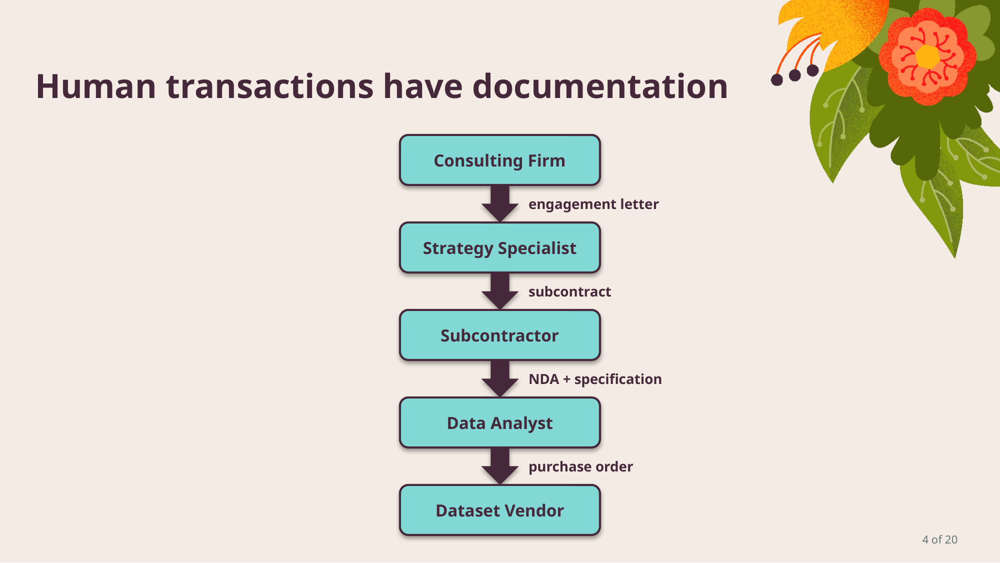
You don't do business with people you don't trust. Trust is codified by contracts, enforced by law, by authority. You can take them to court.
A consulting firm engages a client with an engagement letter. Subcontracts inherit context: what you can and can't do. NDAs, purchase orders. All of these contracts float downwards. Every step has documentation, and you can trace the chain where each piece of data went.
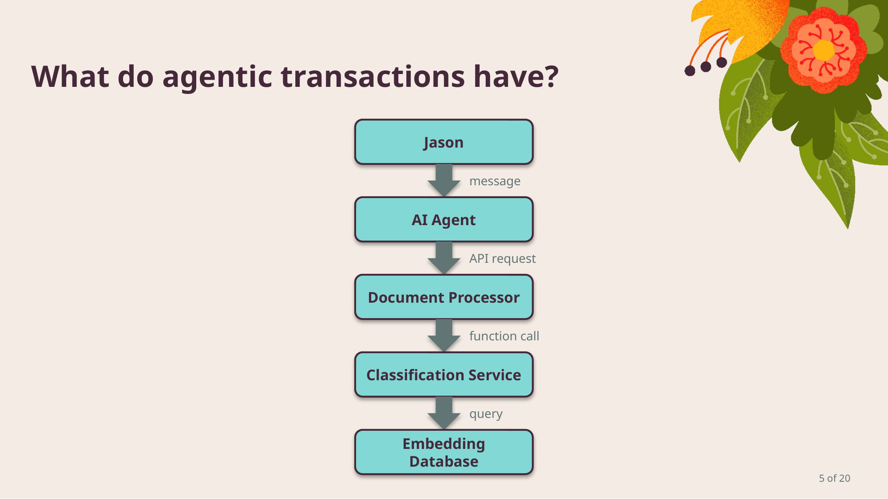
What does the agentic stack have right now? If I message some AI to run workflows, say process a document, what kind of data governance should this data have? Is it sensitive? HIPAA? PIA? The API doesn't know. As it goes further down (classification service, embedding database, maybe storing data) who knows? We have no idea, because there's no contract. The protocol is missing.
The fact that I'm in this room talking to every one of you is because we all speak English. It's a language we have in common. That's why we can communicate, and communication leads to trust. In English we can write those contracts. English is a protocol we all speak, but none of us invented it.
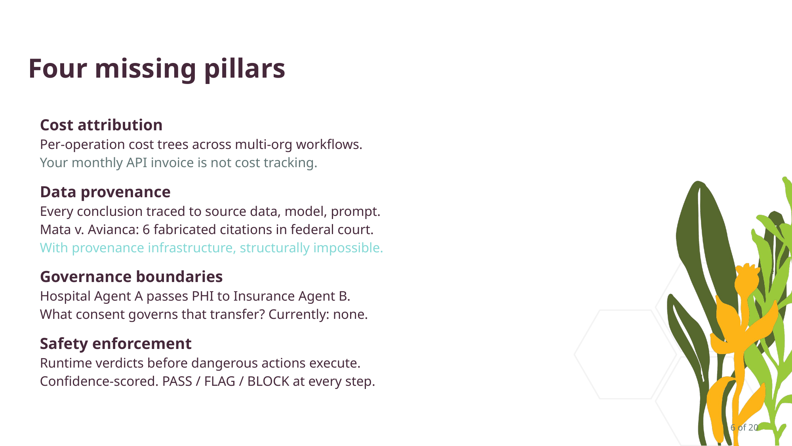
Cost attribution. If you want to subcontract out, you negotiate on price. That's not being scoped in APIs right now. A founder friend set up OpenClaw and overnight had $135,000 in Gemini API calls. Google recognized this as systemic. Their APIs are now tiered because people are blowing up their API costs.
Data provenance. You wouldn't accept a PhD thesis without citations. In Mata v. Avianca, a law firm used ChatGPT for document drafting. The citations were hallucinated. The judge fined them $5,000. Small fine, but the firm's trustworthiness and reputation took a huge hit.
Governance boundaries. If a hospital network's AI is dealing with an insurance agent bot, and the insurance agent has sensitive data (medical records, PII), where's the governance? Usually there are retention records: retain for 18 months, then delete. If the insurance company doesn't get this context, how is it supposed to know?
Safety enforcement. Because of the three pillars above, we can do enforcement. If an organization has policies, like a bot shouldn't give financial advice, now you can enforce it because the governance policies are part of the contract.
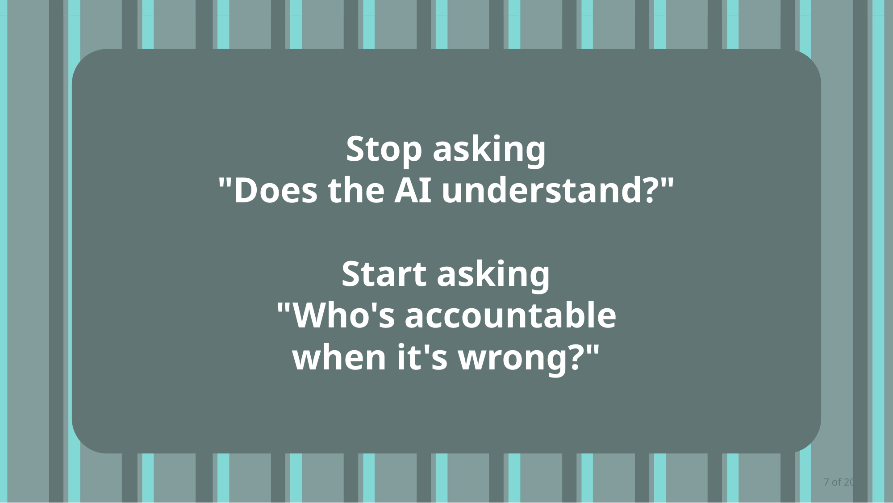
Stop asking "does the AI understand?" Start thinking about who's accountable if things go wrong. Who is liable if a lawsuit hits you?
If I own a dental shop and want a chatbot on my website, and that chatbot gives wrong information, medical advice, and somebody's injured, maybe dead. Who's liable? The dental office? The chatbot provider? The model behind it? Right now, there is no accountability.
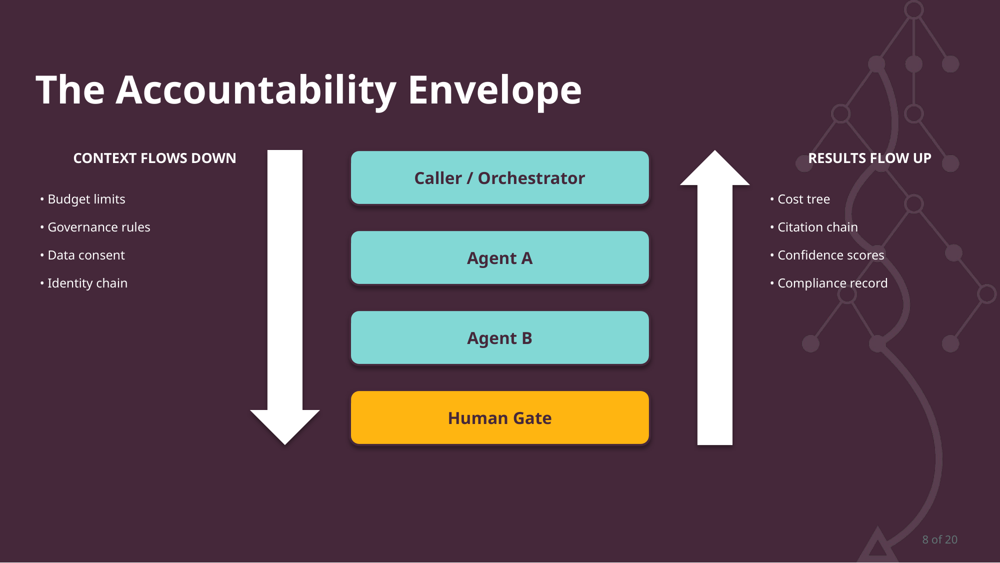
The accountability envelope. Context flows down: budget limits, governance policies, consent, identity chain, provenance. My agent calls Agent A, which talks to Agent B. The human gate is there for the safety classifier. PASS, FLAG, or BLOCK. With all this context, we can do enforcement at runtime.
This is where human-in-the-loop comes in. Decisions AI shouldn't make, like giving refunds. A car manufacturer's chatbot was attacked to give out discounts through prompt injection. Discounts should be human-gated.
The principle: trust but verify. The bot does what we want, we trust it, but we verify it separately with a human in the loop. Results flow up: cost trees, citations, confidence scores.
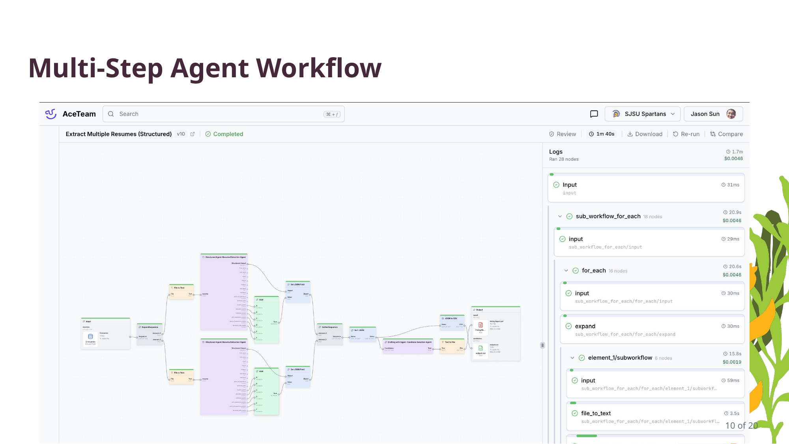
A multi-step workflow running on AceTeam. On the right-hand side is the receipt: nested blocks showing each step of the workflow and its results.
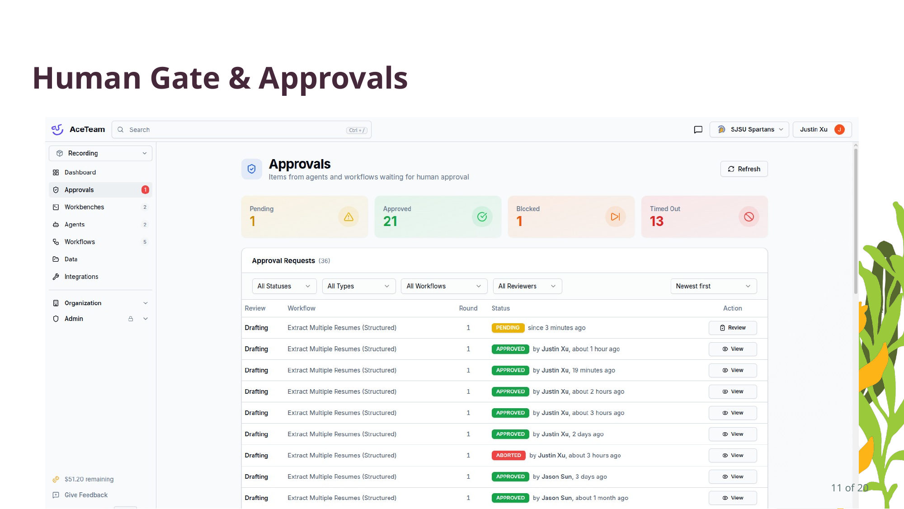
Human-gated approvals. Pending actions are first-class citizens. If a workflow node is stopped, it should escalate.
In manufacturing, any employee can pull the Andon cord to stop the assembly line when they see a quality or safety problem. Toyota built its reputation for reliability on this principle. The same concept applies to AI: any workflow that isn't confident in its decision should be able to raise a flag and say stop, let's escalate, bring in an expert.
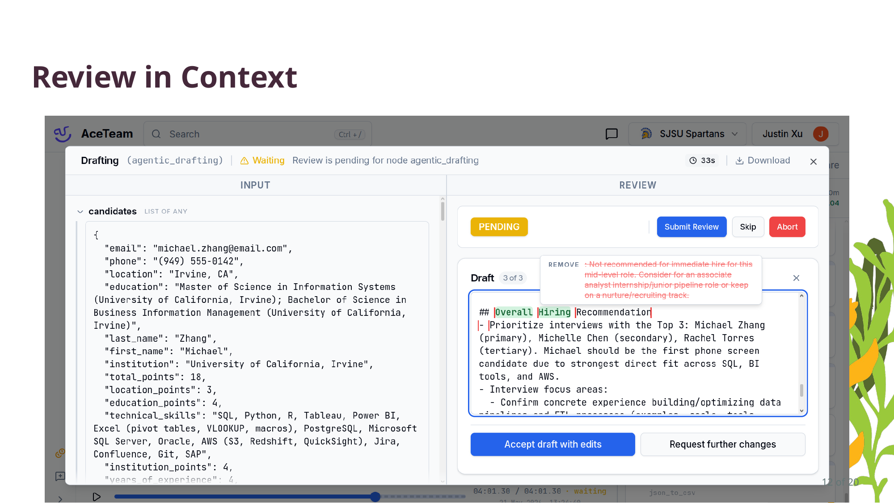
The agent had doubt whether to proceed with a draft. So we review it. It's like checking your inbox: you check your approvals queue, and it's waiting for intervention. What if this is a one-way door, like an email blast? Very costly to undo. That's why you need the human gate.
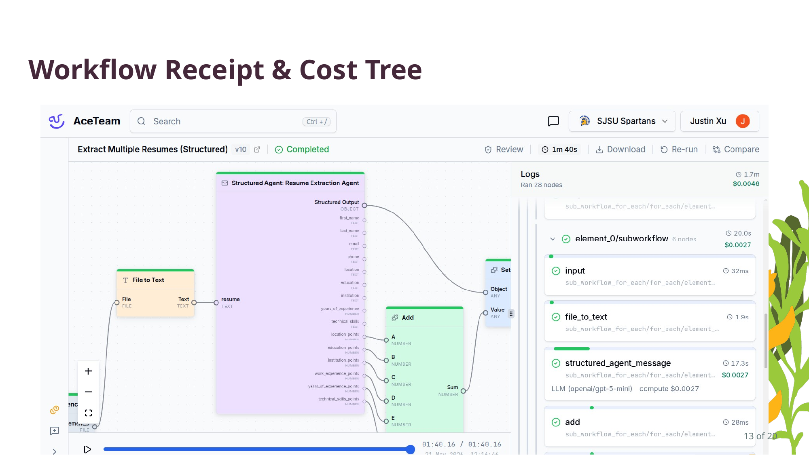
Receipts and cost trees. Every node timed and priced. The grocery-store receipt for an agent workflow.
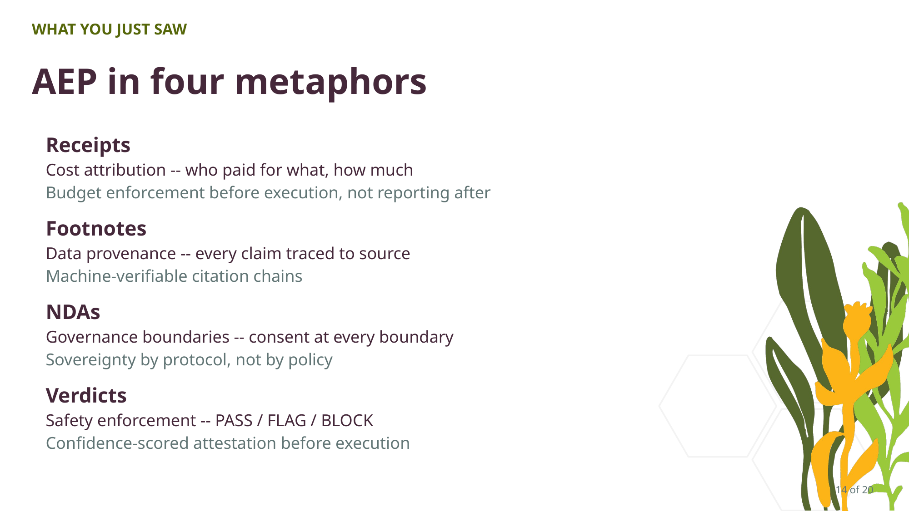
Receipts. Go to the grocery store, walk out with groceries, you also get the receipt. Name, cost.
Footnotes. Where did this piece of data come from?
NDAs. Buy a carton of milk. It says put it in the fridge. That's governance policy. It expires, you throw it away after. We're missing that in the agent tech stack.
Verdicts. Third-party trust-and-verify. Buy an apple pie, somebody certifies it's safe. The FDA or someone. That's the safety attestation.
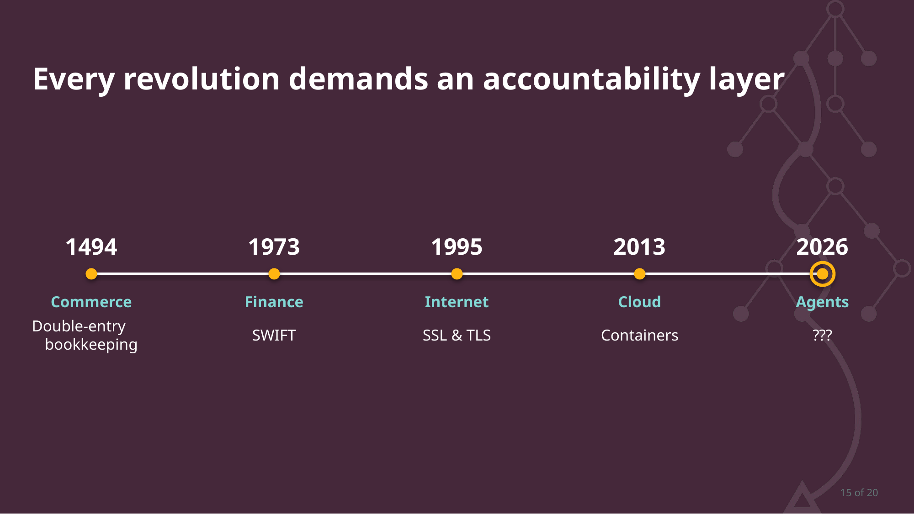
Accounting has developed in key stages throughout history. Double-entry bookkeeping from the Merchants of Venice. SWIFT for banking transfers. SSL/TLS from Netscape. The company is gone, but the protocol survived. Docker/OCI for containers, adopted by every major player.
Agents? What is the accountability protocol for agents?
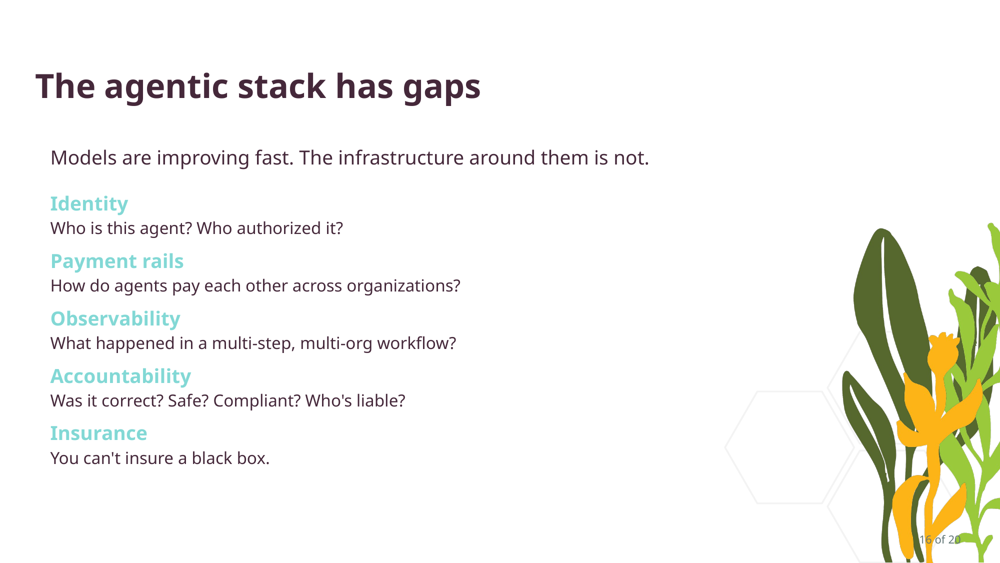
Gaps in the agent tech stack. Identity: how do you know who authorized an agent? Payment rails: agents transacting with each other. Observability: what happened in a multi-org workflow? Accountability: the four pillars. Insurance: you can't insure a black box, but you could insure a workflow because it's more predictable.
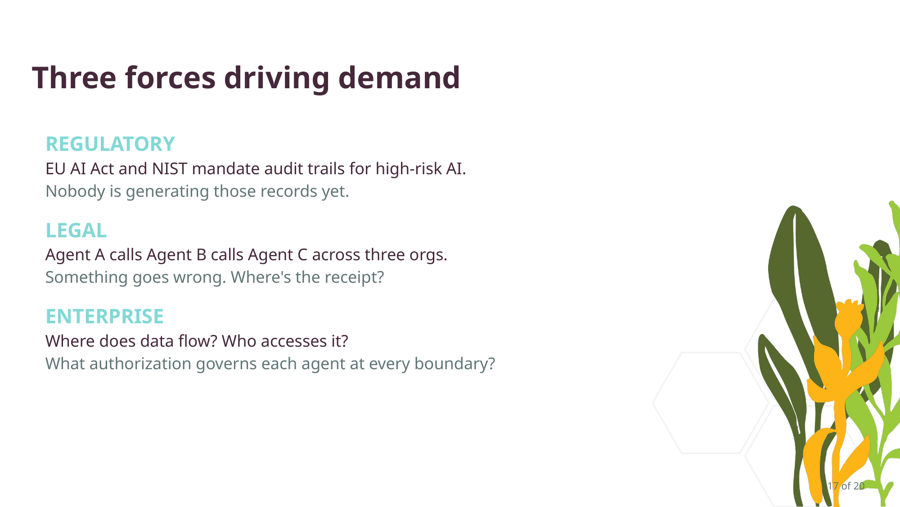
Regulatory. The EU passed an act mandating citations and audit trails for high-risk AI.
Legal. If you take an AI-generated document to court, we need all the metadata that's not in the document.
Enterprise. Auditing: where did data go? Who touched it? Who authorized this transaction?
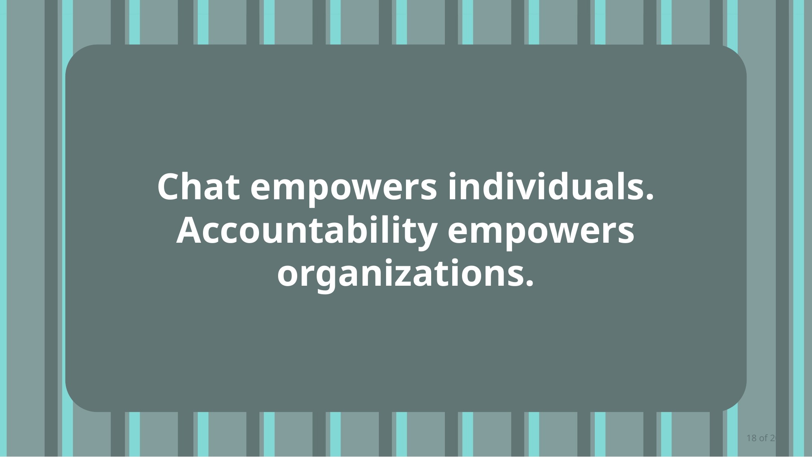
We're in the stage of chat right now. Chat is empowering to the individual. Each of you has played with chatbots, it helps with personal work. That's personal empowerment. But for it to empower the business, a business needs more than a chatbot. A business needs accountability, because businesses operate with liability in mind. Accountability empowers organizations.
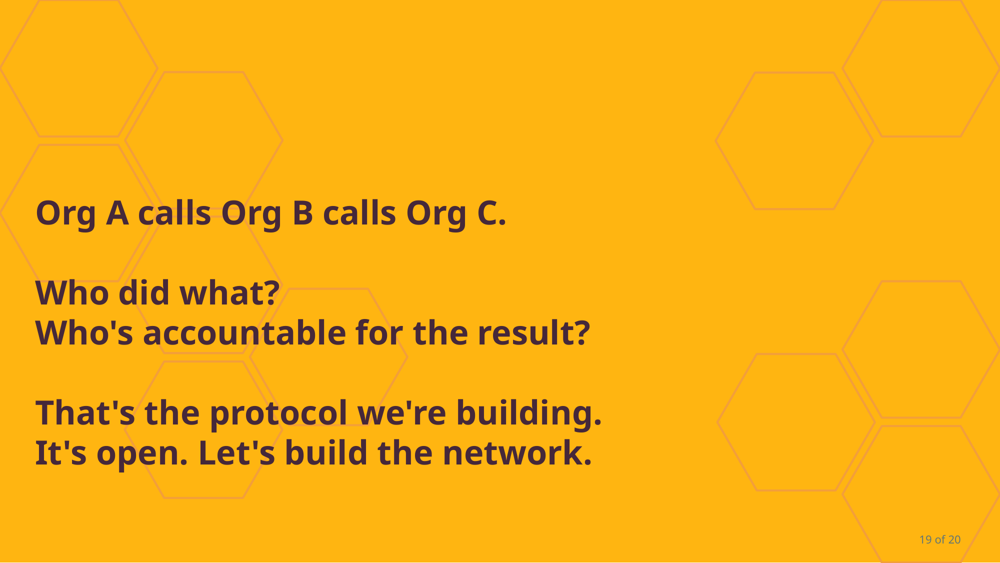
Org A calls Org B calls Org C. Who did what? Who's accountable for this result? That is the missing protocol we're building. It's open. Let's build the network. A trust network, so all our agents can talk with each other. If we were all bankers, we'd all do business through SWIFT.
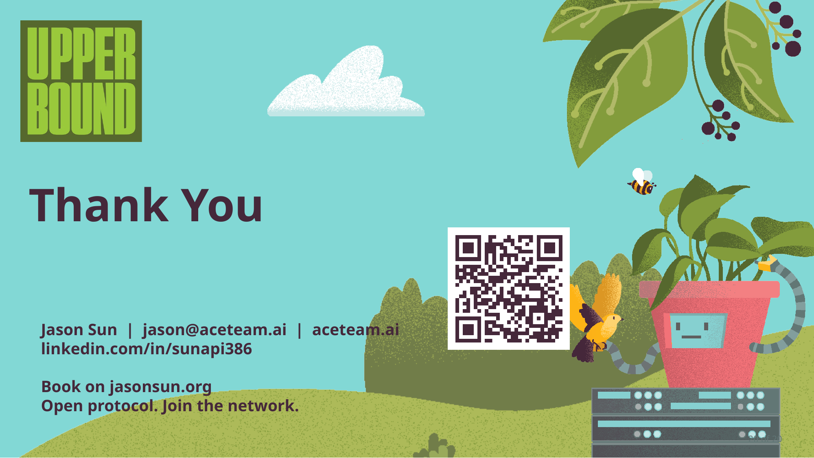
Read the full thesis: Trust at Scale